The 50 Best Albums of 2022
By No Ripcord Staff
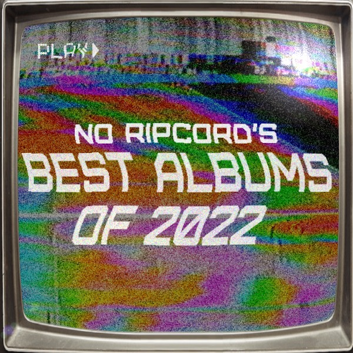
This is it! It's time to reveal our top albums of 2022. A longstanding tradition since 2002, our full list consists of 50 albums selected by the entire No Ripcord staff.
...
50. The 1975
Being Funny in a Foreign Language
(Dirty Hit)
At some point, pop music's enfant terrible Matty Healy would make the confounding artistic statement he always had in him, though not in the way you'd expect. This time, the music accompanied by his hyperactive, pretentious imagination isn't packed in an hour-long ode to online culture or a scattered, sprawling double album. Well, that hasn't completely changed. Instead, Healy opted to write a tighter, hook-driven ode to 80s pastiche that seems like a pleasant diversion if you're not paying attention to his staggering purple prose. With every neurotic diatribe (Part of the Band), he follows it with a sparse, centered love song (I'm In Love With You), which Healy has conditioned us to accept for better or worse. - Juan Edgardo Rodríguez
49. Superorganism
World Wide Pop
(Domino)
Pop music at its best when it's challenging and doesn't take itself too seriously, something many artists are guilty of. Superorganism could never be accused of taking themselves seriously. Their songs thrive on humor that's sometimes so on the nose it's almost painful. On that end, their second album, World Wide Pop, is a massive leap. Whereas they've thrived in chaos in the past, their music here gains a newfound structure, revealing some pretty brilliant songwriting. They also peel back the humor just enough to reveal a sincerity that gives the songwriting greater depth. A host of guests add further bursts of color to their already vibrant world, resulting in an occasionally dizzying but thrilling ride worth taking time and again. - Jeremy Monroe
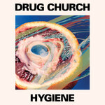
48. Drug Church
Hygiene
(Pure Noise Records)
I’m not sure if anyone had “hardcore going pop” on their 2022 bingo card, but I’m happy to wave the flag for bands with big loud riffs and sugary hooks to have their moment. Few bands not named Turnstile lay claim to perfecting this balance more than Drug Church, and while their instincts for hardcore with hooks are nothing new for them, Hygiene gleams with brilliant terror like a new switchblade. With a promise of a Million Miles of Fun in the album's lead single (a not so shocking reference to Len’s immortal 90s pop classic), Drug Church deliver on all fronts with fuzzed out power chords, infectious riffs, and beer-soaked punk vocals that can actually carry a tune while still sounding serrated. - Peter Quinton
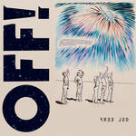
47. OFF!
Free LSD
(Fat Possum)
OFF! vocalist Keith Morris and creative co-conspirator Dimitri Coats have really created something special. Conceived as the soundtrack for a film written and directed by Coats, Free LSD, OFF!’s first LP following eight years of silence, is a conspiracy-riddled, punk-fusion head fuck that angrily spat on any pre-conceived notion I had of what to expect from them. While the vision behind the LP was no doubt aided by the band’s new rhythm section, bassist Autry Fulbright II of …And You Will Know Us By The Trail of Dead and Thundercat collaborator and drummer Justin Brown, OFF! manages to shift gears without losing their way, leaving the band’s necessary aggression fully intact while the Fulbright/Brown combo ably heightens their means of attack. Opening track Slice Up The Pie seems familiar enough until the album transitions into Time Will Come, Coats’ wall of sound enhanced by Brown’s Mahavishnu Orchestra-styled snare fills. From there, OFF! never lets up, a series of free jazz interludes slicing up an unrelenting barrage of aural assault, the 67-year-old Morris more than happy to keep his foot pressed firmly upon mortality’s throat. - Sean Caldwell
46. Dry Cleaning
Stumpwork
(4AD)
On Stumpwork, Dry Cleaning strips their sound to their core. Songs like Driver’s Story and No Decent Shoes For Rain rest on crunchy riffs and slow, spacious drumming. Sure, the band makes room for additional approaches; sax and clarinet flourishes may decorate Anna Calls From The Attic, while Don’t Press Me calls back to the driving guitar work of last year’s New Long Leg. At the center of it all remains Florence Shaw, who’s never sounded so droll or exhausted. But these only make her moments of optimism all the more vital. “Things are shit, but they're gonna be okay,” Shaw says on Kwenchy Kups, which stays with us because we know she means it. - Carlo Thomas
45. Porcupine Tree
CLOSURE / CONTINUATION
(Sony Music UK/Porcupine 3 Ltd)
One of the most unexpected but welcome reunions of recent years, Porcupine Tree’s comeback is a kinetic, wide-ranging album that sounds both familiar and unlike anything the band has done before. From the bass-driven, propulsive jam of Harridan to the sneering metal of Herd Culling to the creeping electronic-tinged Walk the Plank, Closure/Continuation is the sound of three extraordinarily-talented musicians losing themselves in the process of making music and proving that complexity and melody need not be enemies. Between the two choices in the title, here’s hoping this proves to be the continuation of the musical story of Porcupine Tree. - Joe Marvilli
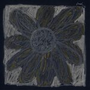
44. Florist
Florist
(Double Double Whammy)
Florist’s beautifully sprawling self-titled album (recorded in 2019) may serve to document a simpler time for all of us, but certainly, that wasn’t its mission. Over a month-long quilting bee of a recording session, the Emily Sprague-led quartet has stitched together fragments of delicate instrumentals and vocally forward tracks into a cohesive work. Reading off song titles provides open disclosure of Florist’s contents (Duet for Guitar and Rain, Jonnie on the Porch). That there are stunning, single-worthy songs here like Red Bird Pt. 2 (Morning) and the jaw-dropping beauty that is Sci-fi Silence almost proves a disservice to their part in the whole. Florist deserves to be taken in for the hour-long journey it requires, with the lyrically centered songs poking in organically from the instrumental ebb and flow they are framed in. - Mark Moody
43. Courting
Guitar Music
(Play It Again Sam)
It’s difficult to pick standouts from the sea of solid acts in the post-punk renaissance, but occasionally one elbows its way to the front of the line. Courting’s smugly-named debut Guitar Music (a likely necessary nod for the Liverpudlian foursome) is one worth mentioning. Taking very obvious cues from nineties Britpop classics (Blur, Oasis) and early 2000s indie (The Strokes, The Libertines), what saves them from falling into the indie landfill is their earnestness and ability to throw other genres in the mix. Breaking up the guitar music are scratches of electric noise—homages to SOPHIE and Charli XCX—all still produced on guitars. With their dry lyricism and a truly impressive understanding of how to build track momentum, Courting may soon catch up to Sports Team on the list of No Ripcord’s most beloved artists. - Gabbie
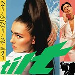
42. Confidence Man
Tilt
(Heavenly Recordings/I Oh You)
Everyone had their own coping mechanisms during the worst of the COVID-19 crisis but when Confidence Man got stuck in Melbourne—one of the world’s most locked-down cities at that point—their response was to build a DIY nightclub in their back garden, christen it ‘The Fuck Bunker,’ and rediscover early 90s dance music. The end result was Tilt—a record that ditched the psychedelia influences of their debut and fully embraced all-out hedonism. The album’s first two singles—Holiday and Feels Like a Different Thing—are pure euphoria and, elsewhere, the Aussie quartet take in handbag house, the New York ballroom scenes, and, in their own words, “J-Lo slut jams.” Now that’s how you ride out a pandemic. - Joe Rivers
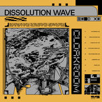
41. Cloakroom
Dissolution Wave
(Relapse)
A hybrid of doom-metal and shoegaze with a futuristic sci-fi concept, Cloakroom found my weakness and exploited it to powerful effect. Dissolution Wave was my first musical love of 2022, and it remains one of the year’s chief highlights, a bold, brilliant, sonically diverse tour de force. If this all sounds a little challenging, please don’t be deterred—nostalgic fans of harder-edged 90s indie-rock will find lots to enjoy here too. Whether you’re a fan of Jesu, My Bloody Valentine, Smashing Pumpkins, or Swervedriver (and everyone should be a fan of Swervedriver), you will enjoy this record. Please, give doom a chance. - David Coleman
40. Beth Orton
Weather Alive
(Partisan)
Artists like Beth Orton hardly get celebrated for maintaining a consistent musical career. And yet, the UK veteran singer-songwriter tapped into something special on her latest, Weather Alive, a contemplative mood piece about the complexities of adult relationships. There's also a crucial climate change component to the album, but rather than warn or educate, she ties such themes to her own experiences and preoccupations. The forces of nature that surround her feel wholly intimate, letting them unfurl with patience and a simple romantic sweep. If that's not reason enough to push artists like Orton into a supposed zeitgeist, then it's worth re-examining the purpose of recognizing challenging works of art regardless of the artists' newness. - Juan Edgardo Rodríguez
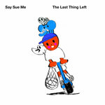39. Say Sue Me
The Last Thing Left
(Damnably)
South Korean rockers Say Sue Me’s third album is a journey to come to terms with the passing of their former drummer, Kang Semin. The band does so through a series of heartful, airy tunes that glide effortlessly through the speakers. There’s a sense of quick-footedness and breeziness that permeates the record, each song skipping along like a ballet dancer losing herself in the sensation of movement. It’s one of those albums where the cover perfectly conveys the music – a kid on a scooter joyfully attempting to launch into space. With The Last Thing Left, Say Sue Me has successfully and thrillingly defied gravity. - Joe Marvilli
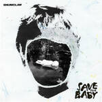
38. Enumclaw
Save the Baby
(Luminelle Recordings)
Save The Baby is the debut album from Enumclaw, a Tacoma-based indie rock quartet whose clear allegiance to 90s-era Sub Pop and Merge acts informs much of what the album has to offer. Finding vocal commonality with Lou Barlow and some of the sugary post-hardcore pop power of Bob Mould, Enumclaw’s maiden outing is a solid and cohesive listen. From its self-titled opener, the jangly mid-tempo stride of 2002, and the Sonic Youth-lean of Cowboy Bebop, Enumclaw are smart to consider their influences, clearly working to interpret them so as not to arrive at pastiche. For vocalist Aramis Johnson, Save The Baby is his first album as a singer and guitarist, having come up in the Tacoma hip-hop scene as a DJ. With that in mind, and with such a strong debut now out in the wild, Enumclaw is positioned well to grow creatively. - Sean Caldwell
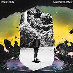
37. Martin Courtney
Magic Sign
(Domino)
I’m not even a hardcore Real Estate fan—and let’s be honest, this solo record is hardly a huge departure from Courtney’s day job—but there’s something so pure and satisfying about Magic Sign that really hits the mark. In a year crammed full of solid country-tinged, pastoral, indie-folk records, this stands out in its own unassuming, pretty way. When challenged on our recent Quarantine the Past podcast to justify this selection, I found it surprisingly hard to articulate why I like this record so much. While there’s a part of me that will always be chasing the thrill of the new, there’s another that will always make time for well-executed, straightforward songs. Just as boldness doesn’t always equate to brilliance, familiarity isn’t always dull, a fact Courtney knows well. These ostensibly humble offerings pack an emotional weight that belies their apparent simplicity. Write Martin Courtney off at your peril. - David Coleman
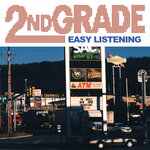
36. 2nd Grade
Easy Listening
(Double Double Whammy)
Though perhaps not the most innovative album, there’s something undeniably charming about this Philadelphia five-piece’s newest release. True to its title, the pleasant power pop of Easy Listening has a doubly vintage sound, equally believable in both the sixties and the nineties. In fact, mashing up these decades, both musically and lyrically, is what this album does best. With its recurring (and slyly tongue-in-cheek) themes of light teenage angst over surf rock melodies, there’s a real sense of Americana throughout: Guided by Voices by way of the Beach Boys. On Teenage Overpopulation, a guitar lick alarmingly similar to the Stones’ Ruby Tuesday makes way for the nasally vocals of Wheatus’ Teenage Dirtbag. On Kramer in LA, the titular Seinfeld star monologues in a sparse, almost Simon & Garfunkel style about his move across the country. The album is rife with this nostalgic layering. While 2nd Grade perhaps bears the most immediate and striking resemblance to Fountains of Wayne, Easy Listening is full of welcome cultural references, and makes for a delightful listen indeed. - Gabbie
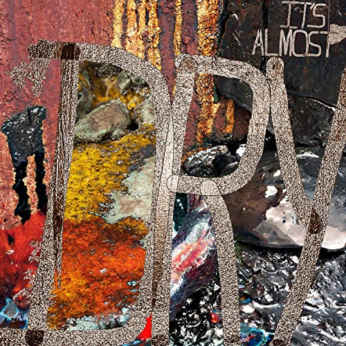
35. Pusha T
It’s Almost Dry
(G.O.O.D. Music / Def Jam)
It’s Almost Dry
(G.O.O.D. Music / Def Jam)
Since the release of 2015's King Push, hip-hop elder statesman Pusha T has upheld a minimalist approach that suits his distinctive bars. But something felt lost with 2018's Daytona: the samples were just as vigorous, but they also felt cluttered when set against his consistently nimble yet grounded delivery. Pusha T manages to pare things back on It's Almost Dry, not to the level of past highlights like Numbers on the Board or Untouchable, but to a point where the sample-heavy arrangements don't overshadow his personality. Bringing in producer Pharrell Williams might have something to do with this rejiggering, unleashing his confident flow over the layered yet lean Brambleton and Scrape it Off. He gets an inspired collaboration from Ye on Dreamin of the Past, a rarity these days, producing a soulful bounce over a sample of John Lennon’s Jealous Boy as performed by Donny Hathaway in 1972. Pusha T still abides by his coke-filed storytelling, make no mistake, but the alluringly grim settings he comes up with continue to impress. - Juan Edgardo Rodríguez
34. The Linda Lindas
Growing Up
(Epitaph)
Punk was never meant to be long-term, but rather, a reactionary burst to a specific moment and time, and some might argue that it never should have lasted beyond that moment. Regardless, it's thrived now for 40+ years and has given generations of disaffected outcasts a space to express themselves. The Linda Lindas captures the spirit of punk in its most innocent, raw form. The songs on Growing Up are simple and honest expressions of teenage rebellion and anxiety (and one written about a cat) set against undeniably catchy music that mixes the saccharine pop of early punks The Go Go's and the abrasive volume and combative attitude of LA legends The Bags. Though the sound is familiar, it feels fresh and exciting in The Linda Linda's hands, and if this is what the future of punk sounds like, then it deserves to be around a little longer. - Jeremy Monroe
33. Carly Rae Jepsen
The Loneliest Time
(604/School Boy/Interscope)
It’s now been over seven years since E•MO•TION: the album that earned Carly Rae Jepsen critical acclaim and meant that Call Me Maybe wouldn’t be an albatross around her neck forever. After a slight misstep with 2019’s Dedicated, The Loneliest Time returns her to the heights of E•MO•TION. However, whereas E•MO•TION shone with glee, The Loneliest Time is—as its title would suggest—a more reflective record, with tracks like Western Wind having a hazy shimmer and a slight tinge of regret. There are still bangers, though, no fear, with Beach House’s tales of terrible men becoming ever more ridiculous to the point of near-parody (“I got a lake house in Canada and I’m probably gonna harvest your organs”), while the title track’s reimagining of disco is I Will Survive for the TikTok generation. - Joe Rivers
32. Panda Bear/Sonic Boom
Reset
(Domino)
Hailing originally from the U.S. and the U.K. respectively, Panda Bear (Noah Lennox) and Sonic Boom (Peter Kember) are nearly enough neighbors in their claimed home of Portugal. Though initially a project started during pandemic lockdowns, proximity ultimately lent itself to a peak-level production on Reset from the two longtime collaborators. The album’s tracks are built from looped samples of fail-safe hooks from the pop vaults circa the 1950’s and 60s. Some are instantly recognizable, such as Eddie Cochran’s Three Steps To Heaven (sampled on Gettin’ to the Point) or The Drifters’ Save the Last Dance for Me (sampled on Livin’ in the After), while others are more obscure but equally catchy a la Randy & The Rainbows’ Denise (sampled on the resplendent Edge of the Edge). The concept of Reset could have failed with lesser artists, but in these masters’ hands, a work of great beauty and joy emerged. At a minimum, it begs for a Reset Redux. - Mark Moody
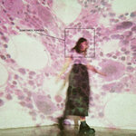
31. Soccer Mommy
Sometimes, Forever
(Loma Vista Recordings)
The strength of Sometimes, Forever comes from how Soccer Mommy combines her ever-growing skills as a songwriter with a deft sense of experimentation. With Oneohtrix Point Never as producer, the album creates addictive earworms (Shotgun, Don’t Ask Me) while throwing head-swiveling curveballs (Unholy Affliction). Then there’s the tracks where she splits the difference, adding new sounds to her repertoire like the cascading synths of With U. No matter the style or structure, Soccer Mommy shows a deft hand at when to cut through the noise with a devastating line or superb melody, but also when to let us get lost in the atmosphere she’s created. It’s another leap forward for an artist who shows no signs of slowing down. - Joe Marvilli
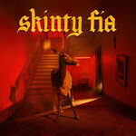
30. Fontaines DC
Skinty Fia
(Partisan)
It may seem a little unusual for a band with its Irish hometown capital city of Dublin embedded in its name to have relocated to London during the pandemic. But when the NME Awards declare your band the “best in the world” boundaries are of little matter. And sure enough, the band’s third album has catapulted them squarely into the realm of worldwide tours and festival appearances. No doubt, the versatility displayed on Skinty Fia, which takes the band beyond typical post-punk boundaries into catchier realms, is to be credited. The see-sawing melody of Jackie Down the Line, the woozy allure of Roman Holiday, the incendiary spoken word cadence of the title song, and the molten gloom of the closing Nabokov serve to cover the waterfront for a band that has fully come into its own. - Mark Moody
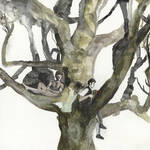
29. Destroyer
LABYRINTHITIS
(Merge)
“A snow angel's a fucking idiot somebody made.” This line, which appears in the second verse of June, sticks out for its absurdity on LABYRINTHITIS, an album full of absurdity. Never has Dan Bejar sounded so angsty, as if the album is solely a vehicle to vent his frustrations. Mirroring his lyrical approach are the songs themselves. They explode with bright riffs and unshakable rhythms (Suffer), shudder with uneasy synths (Tintoretto, It’s for You), and offer up moments of elegance (All My Pretty Dresses). The result is an album that’s off-kilter yet fun, even danceable. The ten songs on LABYRINTHITIS are always evolving, just like Bejar himself. - Carlo Thomas

28. Shygirl
Nymph
(Because Music Ltd.)
Artists who come to prominence via Tik Tok can be very hit and miss, but Blane Muise, better known by her alias Shygirl, has earned her rise to full-length fame. Leaning fully into the recent Gen Z zeitgeist of reclaiming feminist agency through promiscuity, she weaves ethereal bedroom vocals (one of the few allusions to her titular Nymph and shy alter ego) with overtly sexual hyperdub. The clever juxtaposition of lyrical bluntness (“Woke up feelin' like a slut, yeah, I like that/Hit a couple guys, they concur, I'm a bad bitch”) and subtly blended digital trip-hop beats makes for a playful wink of a debut album. It’s this push and pull that sets her apart from her UK garage predecessors and soundalikes, like AlunaGeorge or Jamie xx—turning down the musical intensity by adding softer, twinkling elements while ratcheting up the lyrics with pure lust. - Gabbie
27. Beyoncé
Renaissance
(Parkwood Entertainment / Columbia)
World famous artists a quarter decade into their career are supposed to be winding down, rehashing former glories or struggling to maintain relevance. Clearly no one told Beyoncé, whose aptly-titled seventh solo record saw her retreat to the club – not just the club of 2022, but the club throughout multiple eras, from the birth of house and disco through to the present day. An uplifting record of empowerment and escapism, Renaissance also looks back to early 90s New York ballroom culture, its seamless mix between tracks evoking a DJ set tailor made for voguing. The list of collaborators is exhausting, yet somehow this remains unmistakably a Beyoncé album, albeit a album that, this time, has been made with everybody in mind, rather than just the artist herself. - Joe Rivers
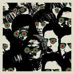
26. Danger Mouse and Black Thought
Cheat Codes
(BMG)
Tariq “Black Thought” Trotter dropped another reminder in 2022 that he’s one of the best rhymers to ever pick up a microphone. That reminder? A little album called Cheat Codes, a collaborative effort that’d been years in the making starring Brian Joseph Burton (a.k.a. Danger Mouse) in a producer role. Danger Mouse’s first hip-hop release since his outing with the late MF DOOM—which spawned the 2005 Adult Swim-inspired LP The Mouse And The Mask under the moniker DANGERDOOM—Cheat Codes is a 38-minute showcase between maestro and emcee. Black Thought’s immediate wit and inventive meter ably finds consonance with every sound Danger Mouse puts to a beat, whether it's 70s-era orchestrated soul (Sometimes), abstract stitch work (Cheat Codes), lowriding stride (No Gold Teeth), or head-knocking flash (Strangers). Boasting a healthy and smartly assembled roster of features like Raekwon, Joey Bada$$, Run The Jewels, A$AP Rocky, and a posthumous inclusion from MF DOOM, Cheat Codes is a demonstration of pure skill that never overwhelms the listener or even resorts to shit-talking bravado. - Sean Caldwell
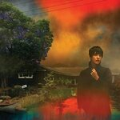
25. Sharon Van Etten
We've Been Going About This All Wrong
(Jagjaguwar)
We've Been Going About This All Wrong is an urgent search for hope. Sharon Van Etten spends the album struggling to find a way through the pandemic, environmental disasters, and near-unending challenges as an artist, mother, and human. It’s an album of conflicting emotions that everyone goes through—her detailed experiences making them ever-more relatable. The shuddering clang of Headspace finds Van Etten desperately demanding, “Baby, don't turn your back to me.” Home to Me and its reverberating keys guide Van Etten-like footsteps away from and back to her child. The devastating Anything expresses her emotional numbness at the state of the world. Even on the worst days though, Van Etten reassures us that there’s good to be found. Born grows from a sparse piano into a flourishing epic of keys, guitars, strings, and horns. Mistakes makes peace with the missteps that plague our memories and embraces life’s little joys. Van Etten knows these positive moments don’t solve the challenges facing us as individuals or humans, but it’s easier to see a way forward with a little bit of light. As she sums up wonderfully, “It's not dark, it's only darkish.” - Joe Marvilli
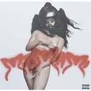
24. Rosalía
MOTOMAMI
(Columbia)
In the Anglophone world, Rosalía has long been heralded as one of the Spanish-speaking artists most likely to cross over, but people didn’t necessarily think this is how she’d do it. Sure, MOTOMAMI is rooted in styles such as reggaeton, but it makes a mockery of the nuevo flamenco label that she has often received due to the sheer number of music styles it embraces and seamlessly weaves in. Opener SAOKO is almost confrontational in its experimentalism, CUUUUuuuuuute flits between Latino hyperpop and a traditional piano ballad, and album highlight BIZCOCHITO sounds like playing a Nintendo Game Boy during an acid trip. Rosalía has spoken about how MOTOMAMI is her most playful album yet, and the listener gets to reap the rewards of that restlessness and genre agnosticism. - Joe Rivers
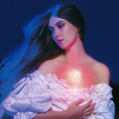
23. Weyes Blood
And In The Darkness, Hearts Aglow
(Sub Pop)
2022 received a late gift with And In The Darkness, Hearts Aglow, an album that blooms with warmth and depth, a testament to Natalie Mering’s enveloping talents. These 10 songs build and swell and retreat with piano balladry, dramatic strings, and intimate harmonies. Encased inside are Mering's thoughts on matters personal and existential. She muses on isolation and connection through the piano ballad It’s Not Just Me, It’s Everybody, a devastated empire inherited by the young on Children of the Empire, and the comfort of true love on Hearts Glow. Mering aims to make And In The Darkness, Hearts Aglow as complex and beautiful as the human experience, and wonderfully succeeds. - Carlo Thomas
22. Oso Oso
Sore Thumb
(Triple Crowm Records)
Like the nostalgic, liminal space cover that adorns the album, sore thumb is an album that revels in bittersweet remembrance. Much of this is due to the undeniable grief-stricken story which accompanies the album’s creation, the impetus to leave the album’s raw, sparse sound intact due to the album’s producer’s sudden passing. But this solemn tribute ultimately works due to Jade Lilitri’s undeniable gift for song-craft, which shines in full force and finds an undeniable balance of emo and power pop through songs like describe you and sunnyside. It’s here where Oso Oso prove their songs can thrive in minimalism in a way few modern emo bands can compare. - Peter Quinton
21. Spiritualized
Everything Was Beautiful
(Fat Possum)
Nothing Spiritualized has done has ever come in small doses. For 30 years now, Jason Pierce (better known as J.Spaceman) has created emotionally grandiose pieces of psychedelic-pop that feel like literal movements more than they do traditional songs. Even their most simple, stripped-back pieces here feel epic in their reach, as if designed to pull you into even deeper spaces. Everything Was Beautiful doesn't deviate much from the established Spiritualized sound, nor does it need to. What it does do is see the band pushing its sound to even greater heights without losing sight of what has made them such a vital part of so many lives for decades now. It's another strong, gorgeous addition to an already stunning catalog and further establishes their legacy as one of the great psych-pop acts of their generation. - Jeremy Monroe
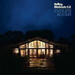
20. Rolling Blackouts Coastal Fever
Endless Rooms
(Merge)
Fans who’ve grown accustomed to the jangling surf rock and power pop of Rolling Blackouts Coastal Fever were in for a surprise with Endless Rooms. On the double punch of Tidal River and The Way It Shattered, the band’s rock sound has grown uneasy and agitated. The Australian quintet came out of quarantine full of frustrations and preoccupations, all of which are explored through newfound genres as diverse as dream pop (Open Up Your Window) and pensive noise rock (Dive Deep). While Rolling Blackouts Coastal Fever has always imbued nuance in their songwriting, Endless Rooms is the result of a band pushing themselves to evolve with the times. - Carlo Thomas
19. billy woods
Aethiopes/Church
(Backwoodz Studioz)
It's been a twenty-year-long grind for New York City MC billy woods, who's finally earning much-deserved recognition after releasing a pair of standout releases. While such an endeavor implies he's looking to make a big statement, Woods couldn't sound more grounded and centered. In the murkier, more solemn Aethiopes, he achieves cohesion through clearly defined memories and allusions, whether it's childhood trauma, stories of betrayal akin to the Roman Empire, or the folly of drill rappers. The lyrical complexity in display follows through in the scarcely brighter Church, even if there's variation in the beats, surrendering to sax fills and languid jazz rap contrary to the former's warped bluesy standards. Despite his bookish references, woods is willing to let us in more than ever as he struggles for authenticity in a corporate-heavy age. If there's any hope, Woods' chilling set is looked upon with the same high regard as Only Built 4 Cuban Linx and The Cold Vein. - Juan Rodríguez Aguilar
18. The Weeknd
Dawn FM
(XO/Republic)
Dawn FM’s conceit is ambitious, but executed flawlessly. As the atmospheric synths (reminiscent of the sweep before the credits in a movie theater telling you to silence your phone) make way for Jim Carrey’s unrecognizable tenor announcing your arrival to 103.5 on the dial, it’s immediately clear that tearing yourself away before the end of the album would be ill advised. That’s not to say that there aren’t incredible standout singles; the Thriller-inspired Sacrifice is slick with ‘80s hooks. But who can resist an hour on a fully-realized post-apocalyptic road trip, peppered with musical homages? The cognitive dissonance between infectious dance beats and deadpan nihilism is alluring. Best to stay all the way through…and presumably stick around for Nightvale, which can’t be too far behind. - Gabbie
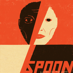
17. Spoon
Lucifer on the Sofa
(Merge)
What can we realistically expect from a celebrated band more than 25 years into their career? A few greatest hits compilations and overpriced tours in stadium venues, maybe. The rare disappointing retread of an old hit masquerading as a fresh take. But it’s not often that we get a new release that we don’t immediately dismiss as “not as good as the early stuff,” let alone one so relevant that it makes it into end of year lists. This year, Spoon made a surprising exception. Maybe the most astonishing thing about Lucifer on the Sofa is exactly how unoriginal it is for being so memorable. This is a rock’n’roll record, pure and simple. It is instantly recognizable as Spoon, no frills attached, yet it’s executed so pristinely that it’s hard to take exception. Each track has perfect pacing, showing off rich guitar textures over powerful crescendoing piano licks that release in explosive peaks. A distinct blues swagger lends a richness to the record, but lead single The Hardest Cut stands out as especially swampy. Even when employing a heavier dose of blues elements, their sound is never derivative. So distinct is Spoon’s own sound, in fact, that it took me an embarrassing number of months to realize that the opening track is a Bill Callahan cover rather than an original composition. Lucifer on the Sofa is the darker, more refined older brother of Gimme Fiction. - Gabbie

16. Horsegirl
Versions of Modern Performance
(Matador)
For those of us old enough to recall the 90’s era of Matador releases that were instant buys (Pavement, Yo La Tengo), Horsegirl’s Versions of Modern Performance would have slotted in perfectly with that crop of releases. But even more so, Horsegirl speaks to a trio (Penelope Lowenstein, Nora Cheng, Gigi Reece) who are friends first and a band second. An early call perhaps, but think Minutemen for an ethos that defines all things Horsegirl. The interplay between Lowenstein and Cheng’s vocals and guitars, while Reece bashes happily along, speaks to an innate understanding of each other that blossoms fully on the wordless harmonies of Beautiful Song and the glorious final minute of Dirtbag Transformation (Still Dirty). The band handles all out racers (Option 8) and the atonally oblique (Live and Ski) with equal aplomb. - Mark Moody
15. Yaya Bey
Remember Your North Star
(Ninja Tune)
Some of the key records made by women of the neo-soul movement – Who Is Jill Scott?, The Miseducation of Lauryn Hill, Baduizm – all featured their creators’ names in the title, as if introducing the world to their manifestos. Yaya Bey’s Remember Your North Star doesn’t feel the need to include this signifier, yet it’s arguably more candid than any of them. Over soul, R&B, reggae, and jazz, Bey showcases life as it’s lived, its dizzying ups and cruel downs, and doesn’t attempt to sugarcoat it. Like Amy Winehouse’s Frank, it’s a record that is as much cathartic self-actualization as it is storytelling, and Bey displays the wit and introspection of a much more established artist. Remember Your North Star is the kind of record you’re excited to go back and hear again, but you’re also just as excited for what its creator might come up with next. - Joe Rivers
14. Soul Glo
Diaspora Problems
(Epitaph)
It’s easy to take the power of art for granted until records like Diaspora Problems come along. Punk rock has often served as a bloodletting, but Philadelphia’s Soul Glo use their debut to flood the Earth with a century's worth of black trauma and oppression from their veins. Every track on their fourth album builds with unbridled urgency and topples over itself with such potent calamity and rage that leaves every track with an overwhelming sense of chaos. But this chaos isn’t senseless; it’s made from collisions of bracing hooks and genre-mashing which can unite the world in chanting along to desperate pleas for change. In Soul Glo’s hands, Can I Live becomes an undeniable cry of rebellion. - Peter Quinton
13. Viagra Boys
Cave World
(YEAR0001)
Swedish post-punk mavericks Viagra Boys blew me away this summer with the high-energy rush of Cave World. This isn’t the studied, sanitized post-punk of, say, a Yard Act; Sebastian Murphy and his charges specialize in a trashier, thrashier, more hedonistic brand of music. Less post, more punk. And more fun, frankly. It's a genre that has really sparked back into life in the 2020s, and nothing shone brighter this year than Cave World. Indeed, nothing I’ve heard this year has swaggered quite so vigorously as Punk Rock Loser, although Troglodyte and Baby Criminal run it close. The album has passion, hooks, and humor for days. What more can you reasonably ask for? - David Coleman
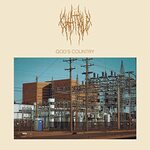
12. Chat Pile
God's Country
(Flenser)
Was God’s Country this year’s most uplifting album? The debut full-length from Oklahoma City’s Chat Pile, God’s Country casts as its central character the band’s hometown, which apparently plays host to a multitude of cautionary tales and bible belt misery. Vocally, Chat Pile exhibit frustrated, anxiety-inducing narration overtop chunky, almost industrial-level, shocks of down-tuned sonic mud with piston-pummel percussion a la Godflesh. Lyrically sparse, the band manages to express volumes in spite of word economy, episodic and fragmented stanzas acting as indictment of American systems of labor (Slaughterhouse) or justice (The Mask), questioning American apathy toward its impoverished citizenry (Why?), or detailing day-in-the-life styled commentary about drug addiction (Wicked Puppet Dance). It’s a rough listen but powerful, musically trodding upon the same ear-splitting ground as Unsane and the recent-era unease at play throughout Daughters’ 2018 release You Won’t Get What You Want. - Sean Caldwell
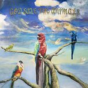
11. Alex G
God Save the Animals
(Domino)
Ever the elusive singer-songwriter, Alex Giannascoli consistently delivers compelling narratives that leave more questions than answers. He's also a nondescript personality who downplays his talent by explaining his songwriting process in practical terms. Reading any of his interviews seems like a moot point; the most scorching topic anyone could get out of him during the album cycle for his ninth full-length album was his sincere love for 90s pop-rock. It might explain why some misinterpreted the single Runner to sound a little like Soul Asylum when, in truth, it comes across more as a product of intuition and feeling than imitation. Still, Giannascoli offers some meaningful insight within his airy, hazy folk——and playfully offbeat Auto-Tune—on God Save the Animals, whether it's one's relationship with religion, being willing to do good, or how the creative process can lead to self-doubt. He finds solace in these quasi-confessionals, forging ahead as best as he can until it's time to do it all over again. - Juan Edgardo Rodríguez
10. Sudan Archives
Natural Brown Prom Queen
(Stones Throw)
Brittney Parks made an impression three years ago with her debut album, Athena, which saw her pushing strains of hip hop, electronic, R&B, and pop into decidedly experimental spaces and abstract songwriting that could be as challenging as it was fascinating. Sudan Archives continues her winning streak with her second album, Natural Brown Prom Queen. Her confidence as a producer and songwriter has grown since then, turning out some striking performances. What makes it so thrilling is how she continues challenging the limits of what conventional pop music is capable of doing without sacrificing its undeniable appeal. Her lyrics are self-assured and bold as ever but also strikingly personal, revealing self-doubt and frustration alongside bravado and a healthy dose of swagger, resulting in one of the best pop albums of 2022. - Jeremy Monroe
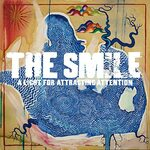
9. The Smile
A Light for Attracting Attention
(XL)
A Radiohead side project in the No Ripcord Top 10? To quote the song that provided our humble little website with its name, "it's inevitable, inevitable." The Smile isn't just any old side project, though. Thom Yorke and Jonny Greenwood's collaboration with Sons of Kemet drummer Tom Skinner has seemingly breathed new life into their songwriting. It's energetic, frenetic even, and when was the last time you could say that about Radiohead? For my money, A Light For Attracting Attention constitutes Yorke and Greenwood's best work since In Rainbows. As for Skinner? Well, it may not top last year's sublime Black To The Future but it certainly runs it close. - David Coleman
8. Wet Leg
Wet Leg
(Domino)
2022’s ‘band most likely to’ went and made the record we all expected them to, yet you still couldn’t help but get caught up in its giddy sugar rush. Ubiquitous crowd-pleasers like Chaise Longue and Wet Dream were made to pogo to, and even hid the paucity of ideas that hamstrung other tracks (that’s literally the riff from The Man Who Sold The World in I Don’t Wanna Go Out, right?). But beyond the headline-grabbers, there was a charm and wry humor that meant you were always on their side. Too Late Now’s skewering of dating apps is as hilarious as it is vicious, and the denouement of Ur Mum, which we’ll refer to as “prolonged screaming over The Banana Splits theme song,” would melt the iciest of hearts. Will they ever hit such heights again? The machinations of the hype machine mean they probably won’t, but listening to Wet Leg’s raucous debut, nothing has ever seemed to matter less. - Joe Rivers
7. Black Country, New Road
Ants from Up There
(Ninja Tune)
Consider the Concorde, an aircraft which promised revolutionary innovation, delivered on some fronts, but was ultimately not sustainable in the long run. The ambitions of Black Country, New Road—and their fascination for the aircraft—could not be more on point considering what they delivered the world shortly before their singer/songwriter left an opus in their wake. Ants From Up There is undeniably a Rube Goldberg-type album of baroque-pop exuberance, where rock grandeur, folk modesty, and orchestral pomp patiently elevate one another beyond their parameters. But it’s Isaac Wood’s gracious musings on love, filled with sci-fi imagination, and warbling vulnerability, that make even their grandest-stretching epics feel as intimate as a campfire story of deeply personal longing. - Peter Quinton
6. Special Interest
Endure
(Rough Trade)
How best to describe a group as frenetic and jarring as Special Interest? When so many raucous genres collide—punk, electronica, disco, house, funk—the end result could well be disastrous. Instead, the effect is a vital frenzy of emotion. It’s an exhortation to dance; to vogue in the mosh pit. As the album builds, careening headfirst into each of its genres, it still holds tight to the same thumping beat—keeping you on the dancefloor and your heart rate high. Lunging from the indie sleaze call and response of Foul, which evokes a sleeker Beth Ditto, or the apocalyptic vibe of My Displeasure, with its twinge of TV on the Radio, it ultimately lands on the absolute mammoth genre-bending closer LA Blues. Mechanical guitars frame pops of operatic backing vocals as they paint Louisiana’s (not Los Angeles!) dark side. Music to dance, scream, fuck, and fight to, Endure is undoubtedly one of the most exciting records to emerge from 2022. - Gabbie
5. Nilüfer Yanya
PAINLESS
(ATO)
PAINLESS
(ATO)
London’s Nilüfer Yanya may have decamped to rural Cornwall during lockdown to record her sophomore album, PAINLESS, but the album revels in the electric crackle of city streets. Yanya’s vocals and guitar lines are fluid and assured, leading to pulling off the nearly chorus-less midnight sun as an ever-building, unstructured groove that creates a delirious tension. The sultry vamp of the mystic explores similar territory, but more traditionally structured songs prove to be just as potent. Yanya’s whispered vocals alongside the effects-driven guitars of shameless stack up against any of Prince’s introspective ballads. Meanwhile, the darker urgency of stablise serves to highlight the wide-ranging versatility on display across a dozen tightly constructed tracks. - Mark Moody
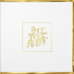
4. Beach House
Once Twice Melody
(Sub Pop)
Seemingly destined to be described as consistent, dependable, and even pleasant, Beach House emphatically ripped up the script earlier this year with Once Twice Melody, a wondrous double album that oozes confidence, ambition, and joie de vivre in equal measure. Established artists rarely find such thrilling new gears eight albums into their careers, and the Baltimore duo ensures the momentum is not squandered, operating with startling effectiveness over nearly 85 minutes. It’s customary to pick out highlights in articles like this, but Once Twice Melody is a rare breed in 2022—an old-school double album that rewards focus and attention. While the parts are often magnificent, the sum is the true prize. - David Coleman
3. Jockstrap
I Love You Jennifer B
(Rough Trade)
The art-school duo of Georgia Ellery and Taylor Skye more than exceed expectations on their debut album, I Love You, Jennifer B. Armed with an 18-piece orchestra, Jockstrap take their experimental inclinations to create immersive blends of electronic, indie rock, and disco. See how the synth-pulses and distortions add heightened suspense to tracks like Neon and What’s It All About? Yet equally vital to the album’s success are the more orchestrated tracks. Glasco moves from a hushed yet sparkling ballad to a sweeping song with swelling strings. The dramatic Lancaster Court could play alongside the performance of a Shakspearean tragedy. Rarely does the theatrical sound this vibrant and visceral. - Carlo Thomas
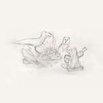
2. Big Thief
Dragon New Warm Mountain I Believe in You
(4AD)
After the fantastic one-two punch of U.F.O.F. and Two Hands, it seemed impossible to think that Big Thief could keep up the consistent excellence they had put out since their debut six years ago. That statement is partially correct—instead of meeting their past successes, they’ve managed to exceed them with Dragon New Warm Mountain I Believe in You. A sprawling masterpiece, it’s the sound of a band throwing everything at the wall and seeing what sticks. And somehow, all of it sticks! The four-piece performs these songs as a truly singular entity, completely in tune and bringing out the best in each other. This is one of those records where every fan will find something to enjoy. Do you like Big Thief’s more experimental side? Try the taut, sprightly Time Escaping or the shadowy percussion of Blurred View. Do you like their classic, melodic sound? The joyous, layered Little Things or the acoustic, head-bopping Simulation Swarm is up your alley. Mournful Big Thief? Sparrow. Funny Big Thief? Spud Infinity. Country Big Thief? Red Moon. On and on and on, these are only a handful of the moods and genres they try throughout the album. And the best part is—all of it works. Big Thief have truly made a double album for the ages, one that will be debated, discussed, and dissected for years to come. You can’t ask for a better success story than that. - Joe Marvilli
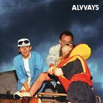
1. Alvvays
Blue Rev
(Polyvinyl)
There's always this assumption that innovation, or capturing the essence of a particular time, makes an album essential. On their third album, Canadian indie pop group Alvvays tap into something more important to get there: a keenness and understanding of how terrifying it can feel to grow and embrace feeling discomfort. Life can feel like a real drag throughout Blue Rev, but also unquestionably human—whether it's the aimlessness of academia, the struggle with personal growth and how it can feel like an illusion sometimes, or the very modern quandary of looking like a winner on social media. But there's also something quietly revelatory about their musical vision, finding depth in genres as old-fashioned as power pop and shoegaze and giving them a much-needed refresh. You might think you've heard the fuzzed-out shimmer of Easy on Your Own? or the jangly call to arms that is After the Earthquake before, but you haven't. Belinda Says is a soaring pop confection with bite that will stand the test of time. It's a little baffling how immediate Blue Rev sounds from beginning to end; how they manage the clever trick of writing an instantly pleasurable set of songs that also reward when you commit to them. They can't help but dwell on their challenges with openness and curiosity, all while not realizing a practically flawless album is what came of it. - Juan Edgardo Rodríguez
...
So there you have it: our top albums of 2022. We'd love all of you to chime in and tell us what were your favorite albums of this year by reaching out to us via our official Twitter (@noripcord), Instagram, and Facebook accounts. And last but not least, we'd also love it if you'd check out our bi-monthly podcast, Qurantine the Past (Best of 2022 episodes posted below). We hope you enjoyed the list and our coverage of the year; wishing you all the best for the holidays and see you again in 2023.
21 December, 2022 - 00:55 — No Ripcord Staff